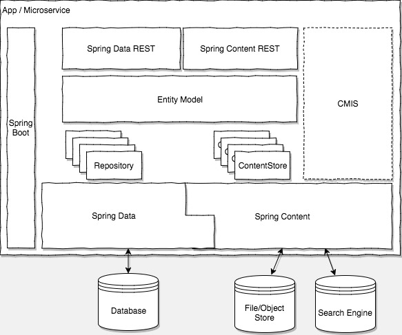

Content Services for Spring
Cloud-Native Content Management Extensions for Spring.
For creating cloud-native, horizontally scaling Content Management Services that manage your unstructured data and rich content such as documents, images and movies.
Features
-
Standardized access to content no matter where it is stored
-
Associate content with Spring Data entities
-
Reactive content access (S3)
-
Full-text search (Solr and Elasticsearch)
-
Content rendition and transformation
-
Metadata extraction from files
-
Pessimistic versioning or auto-versioning
-
REST or CMIS endpoints
Videos
-
SpringOne 2017 - A Guided Tour From Code Base To Platform 11:28 - 21:58
-
SpringOne 2018 - From Content Management to Content Services with Spring Boot, Data and Content
Modules
- Commons - Core content management concepts underpinning every other module
- S3 - Store support for Amazon S3, and any other S3-compliant object storage. Also supports reactive access.
- Filesystem - Store support for the Filesystem storage
- Mongo - Store support for Mongo's GridFS storage
- JPA - Store support for JPA BLOB storage
- Renditions - Extensible rendition service for content transformations
- Metadata Extraction - Extensible metadata extraction service from files
- Solr - Content indexing and search with Apache Solr
- Elasticsearch - Content indexing and search with Elasticsearch
- Versions Commons - Locking and versioning semantics for Entities and associated content
- Versions JPA - JPA-based implementation of locking and versioning
- REST - Exports Stores as hypermedia-driven RESTful resources
- CMIS - Exports Stores through the CMIS browser bindings
Overview

Figure 1. understanding how Spring Content fits into the Spring eco-system
Quick Start
<dependency>
<groupId>it.intesys</groupId>
<artifactId>spring-content-fs-boot-starter</artifactId>
<version>3.0.17</version>
</dependency>
For a quick taste, look at the following domain object:
@Entity
@Getter
@Setter
@NoArgsConstructor
public class File {
@Id
@GeneratedValue(strategy = GenerationType.AUTO)
private Long id;
private String name;
private Date created = new Date();
private String summary;
@ContentId private String contentId;
@ContentLength private long contentLength;
private String contentMimeType = "text/plain";
}
This defines a simple JPA entity with a few structured data fields; title, authors and keywords and two Spring Content-managed data fields; @ContentId and @ContentLength.
The structured data fields are managed in the usual way through a CrudRepository<SopDocument,String> interface.
Content is handled separately with a ContentStore interface:-
public interface FileContentStore extends ContentStore<File, String> {
}
This interface extends Spring Content’s ContentStore and is typed to the entity class File and the id class String. Put this code inside a Spring Boot application with spring-boot-starter-data-jpa and spring-content-fs-boot-starter like this:
@SpringBootApplication
public class SpringContentApplication {
public static void main(String[] args) {
SpringApplication.run(SpringContentApplication.class, args);
}
}
Launch your app and Spring Content (having been autoconfigured by Spring Boot) will automatically craft a concrete set of operations for handling the content associated with this Entity:
-
S setContent(S entity, InputStream content) -
InputStream getContent(S entity) -
S unsetContent(S entity)
For more, check out our initial Getting Started Guide, or watch one of our SpringOne talks 2016, 2017 @11mins and 2018.
Reference Documentation
| Boot 2.4.x+ | Boot 3.0.x+ | |||||||
|---|---|---|---|---|---|---|---|---|
| GA | SNAPSHOT | GA | SNAPSHOT | |||||
| Storage | ||||||||
| Spring Content S3 | 2.9.0 | 2.10.0 | 3.0.17 | 3.1.0-SNAPSHOT | ||||
| Spring Content GCS | 2.9.0 | 2.10.0 | 3.0.17 | 3.1.0-SNAPSHOT | ||||
| Spring Content Azure Storage | 2.9.0 | 2.10.0 | 3.0.17 | 3.1.0-SNAPSHOT | ||||
| Spring Content Filesystem | 2.9.0 | 2.10.0 | 3.0.17 | 3.1.0-SNAPSHOT | ||||
| Spring Content Mongo (GridFS) | 2.9.0 | 2.10.0 | 3.0.17 | 3.1.0-SNAPSHOT | ||||
| Spring Content JPA | 2.9.0 | 2.10.0 | 3.0.17 | 3.1.0-SNAPSHOT | ||||
| Renditions | ||||||||
| Spring Content Renditions | 2.9.0 | 2.10.0 | 3.0.17 | 3.1.0-SNAPSHOT | ||||
| Metadata Extraction | ||||||||
| Spring Content Metadata Extraction | Not implemented | Not implemented | 3.0.17 | 3.1.0-SNAPSHOT | ||||
| Versioning | ||||||||
| Spring Versions JPA | 2.9.0 | 2.10.0 | 3.0.17 | 3.1.0-SNAPSHOT | ||||
| Fulltext Indexing | ||||||||
| Spring Content Solr | 2.9.0 | 2.10.0 | 3.0.17 | 3.1.0-SNAPSHOT | ||||
| Spring Content Elasticsearch | 2.9.0 | 2.10.0 | 3.0.17 | 3.1.0-SNAPSHOT | ||||
| APIs | ||||||||
| Spring Content REST | 2.9.0 | 2.10.0 | 3.0.17 | 3.1.0-SNAPSHOT | ||||
| Spring Content CMIS | 2.9.0 | 2.10.0 | 3.0.17 | 3.1.0-SNAPSHOT | ||||